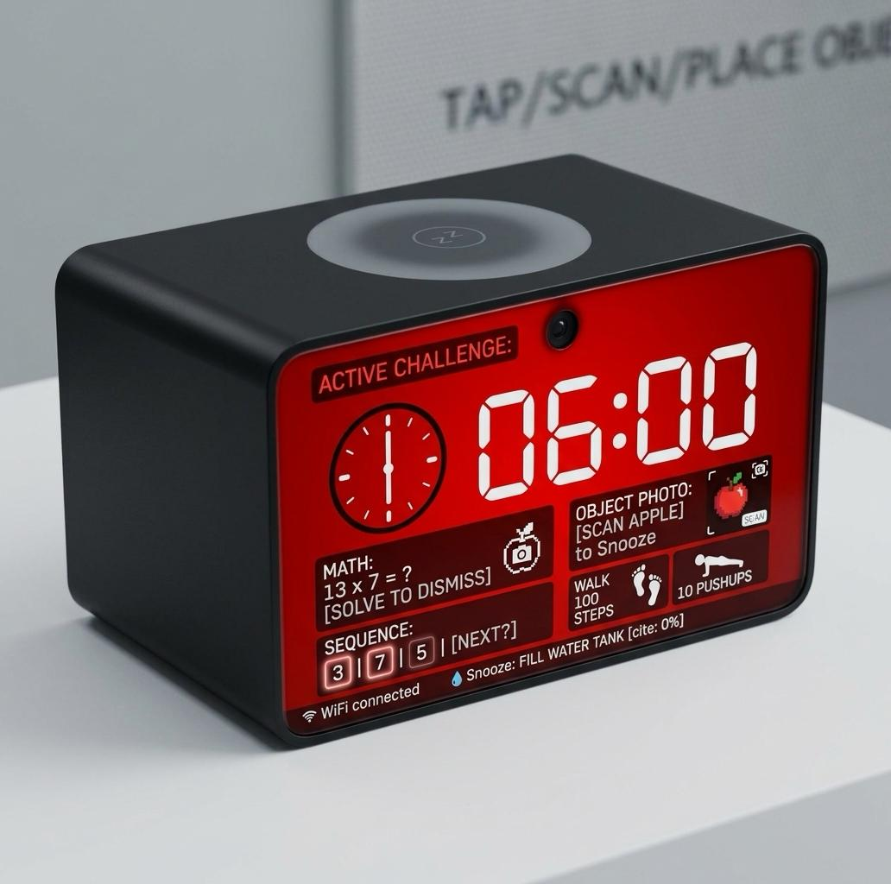
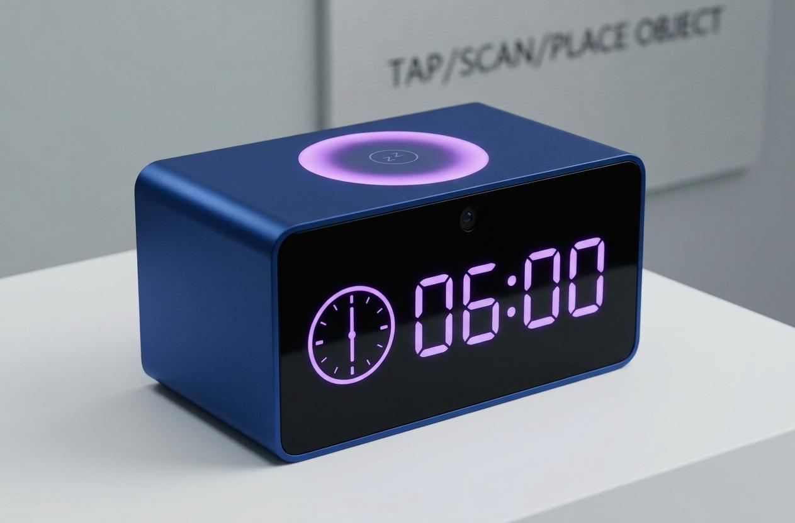

Product Features

Brain-Bending Puzzles
No more snoozing in your sleep. Solve logic games and math challenges to prove your brain is actually turned on before the alarm shuts off.

Interactive Object Scan
Get out of bed and prove it. Your alarm won't stop until you walk over and scan a specific item in your house, like your coffee mug or favourite plant.

A Little Shock!
For the heaviest sleepers. Delivers a safe, gentle jolt to snap you out of deep sleep when loud noises just aren't cutting it.

Built-in AI Wake Check
Smart computer vision that analyzes your face and movements to make sure you're actually awake and completing your morning challenges. No cheating allowed!